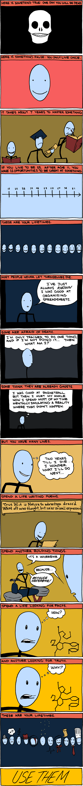

Attention shapes the self, and is in turn shaped by it.Mihaly Csikszentmihalyi, Flow
Quotes I come back to.
Attention shapes the self, and is in turn shaped by it.Mihaly Csikszentmihalyi, Flow
The mind is a wonderful servant but a terrible master.
You have the right to work, never to its fruits.Bhagavad Gita
The generality of mankind cannot accompany us one short hour unless the path is strewn with flowers.Michael Faraday
What do you care what other people think?Richard Feynman
No problem is too small or too trivial if we can really do something about it.Richard Feynman
You can control what you think, and you can control how you think, therefore you can control who you are.Eileen Gu
If your goal doesn't have a schedule, it is a dream.Kevin Kelly, Excellent Advice for Living
One day you will wake up and there won't be any more time to do the things you've always wanted. Do it now.Paulo Coelho
Often, the key to succeeding at something big is to break it into its tiniest pieces and focus on how to succeed at just one piece.Tim Urban
Getting cheated occasionally is the small price for trusting the best of everyone, because when you trust the best in others, they generally treat you best.Kevin Kelly, Excellent Advice for Living
It's possible that a not-so-smart person who can communicate well can do much better than a super-smart person who can't communicate well.Kevin Kelly, Excellent Advice for Living
When you're thinking about something that you don't understand, you have a terrible, uncomfortable feeling called confusion. It's a very difficult and unhappy business. And so, most of the time, you're rather unhappy, actually, with this confusion. You can't penetrate this thing.Richard Feynman
The confusion is because we are some kind of apes that are kind of stupid, trying to put two sticks together to reach the banana, and we can't quite make it. And I got this feeling all the time, that I'm an ape trying to put two sticks together. So I always feel stupid. Once in a while though, the sticks go together on me and I reach the banana.
I was an ordinary person who studied hard.Richard Feynman
Life can be much broader once you discover one simple fact: everything around you was made up by people no smarter than you.Steve Jobs
You've got to act, and you've got to be willing to fail.Steve Jobs
You are always to some degree wrong, and the goal is to be less wrong.Elon Musk
